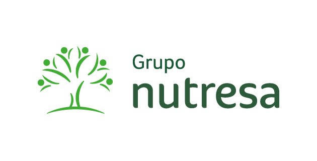
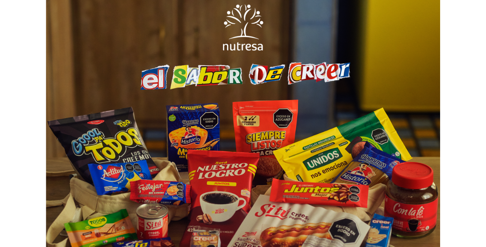
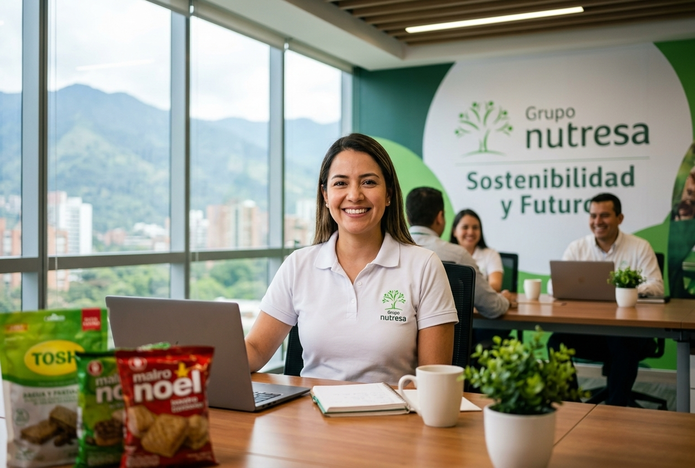
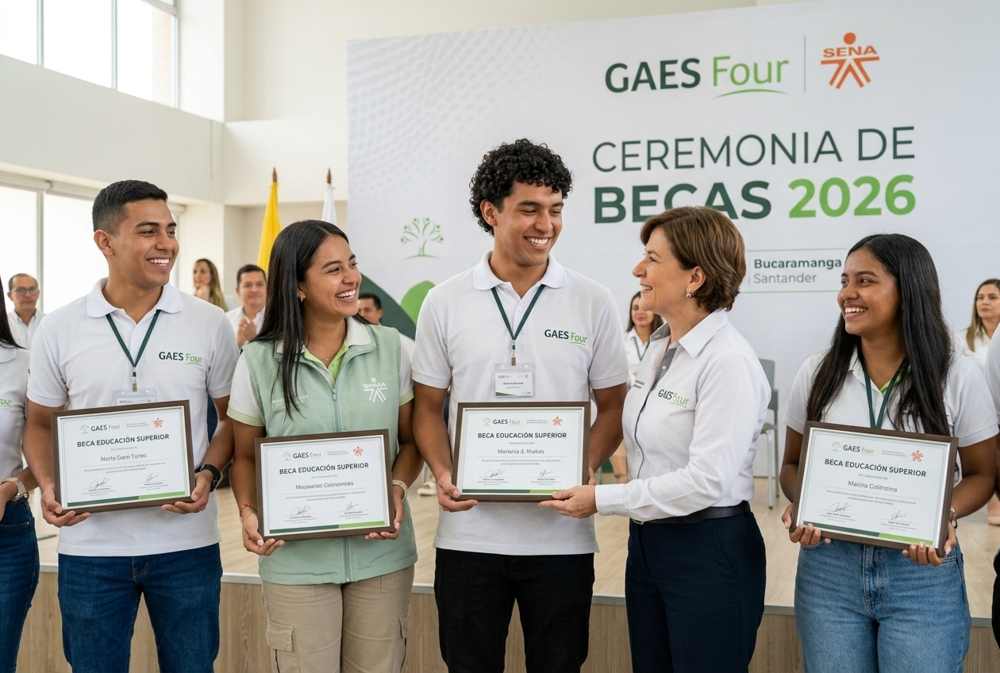
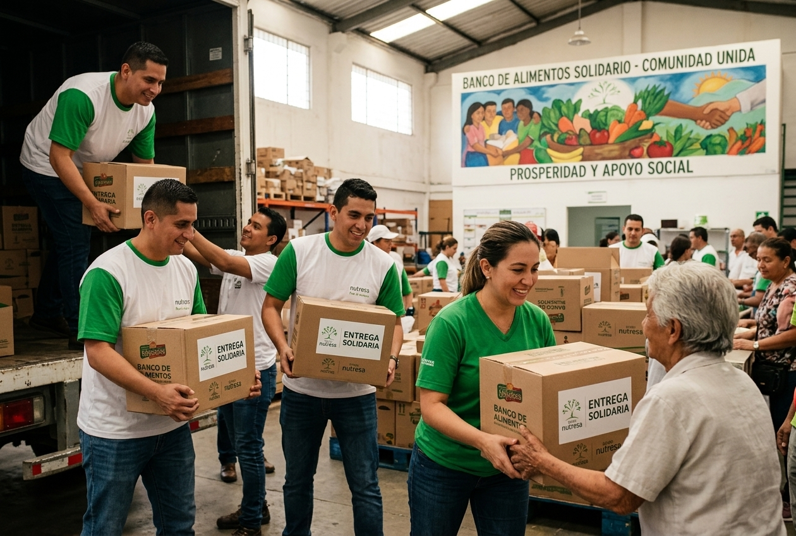
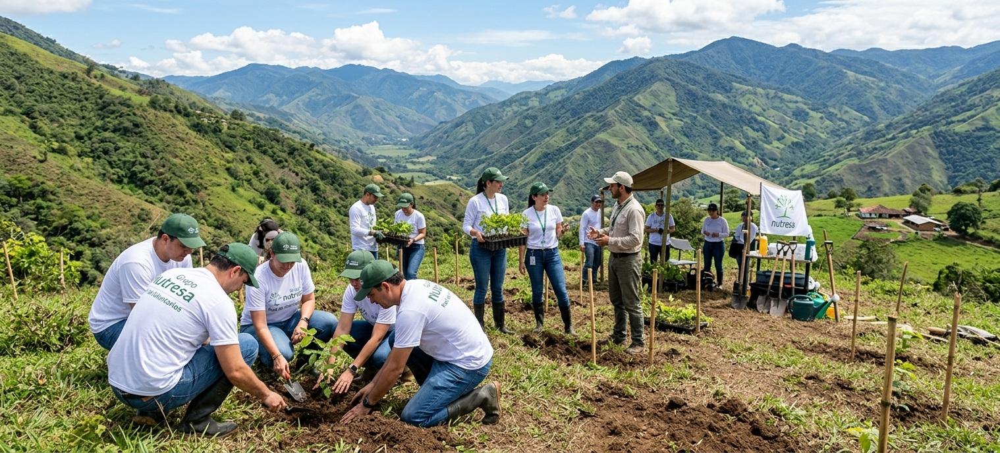
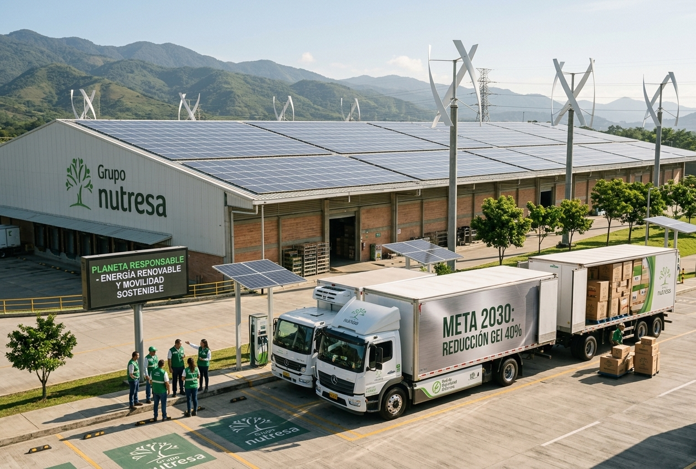
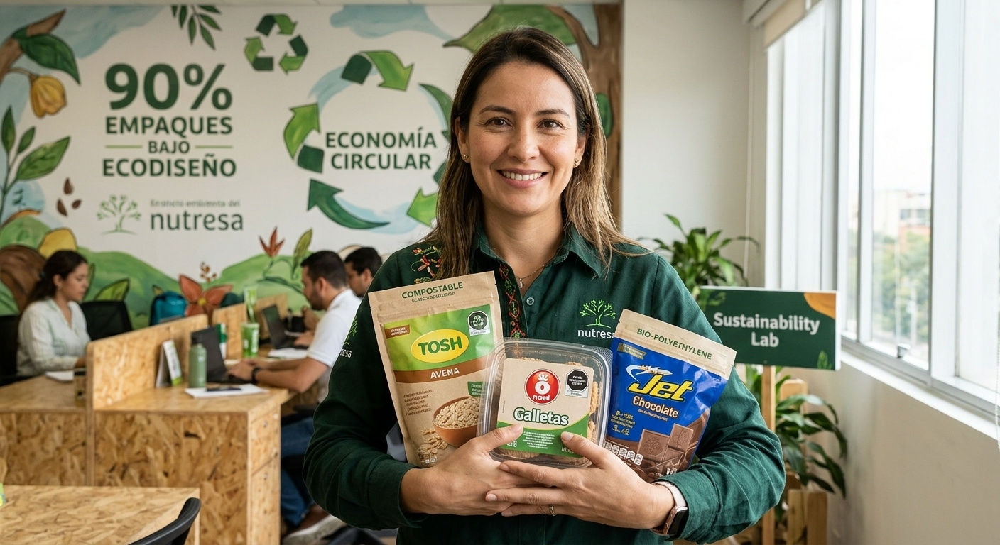
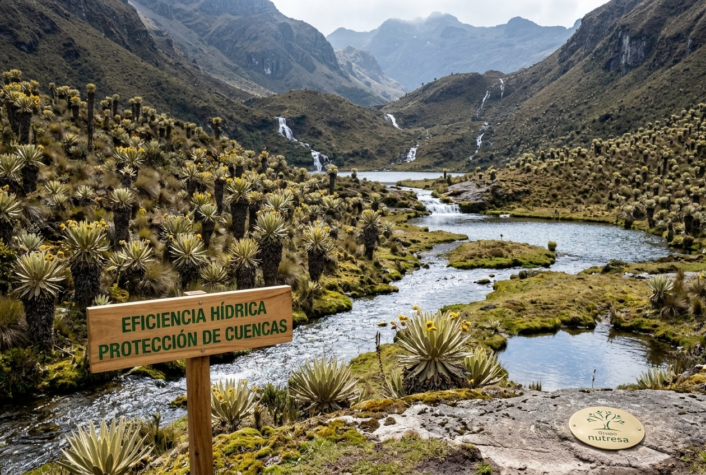
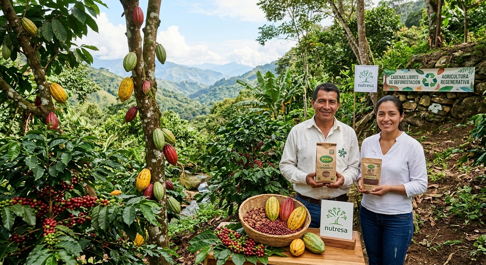

GRUPO NUTRESA S.A.
Modelo de desarrollo sostenible, triple cuenta de resultados y buenas prácticas ambientales en el sector agroindustrial colombiano.
El Futuro que Construimos (#ENTRETODOS)
Video institucional de presentación corporativa donde se visualiza el compromiso colectivo, la cultura organizacional y la magnitud de Grupo Nutresa en el mercado.
Capitalismo Consciente en Acción
Análisis estratégico del caso Nutresa bajo la perspectiva del capitalismo consciente y la gestión gerencial sostenible orientada al valor compartido.
Actividad Económica & Sector
Alimentos y Consumo Masivo / Agroindustrial.
Producción, comercialización y distribución de alimentos (cárnicos, galletas, chocolates, café, helados y pastas). Modelo centrado en las personas, ética, innovación y sostenibilidad de la cadena de valor.

Portafolio comercial y marcas líderes en hogares.
Pilar Económico: Viabilidad & Rentabilidad
Aporte de marcas líderes al crecimiento en ventas
Ingresos derivados por canales digitales
Cumplimiento del plan de geografías
Retorno ROIC sobre capital invertido
Índice de satisfacción de clientes en Colombia
Pilar Social: Bienestar y Comunidad

$224.253 Millones invertidos (2024)
Calidad de vida, salud mental, formación y equilibrio personal. Fomenta la inclusión y el crecimiento profesional continuo.

99 Becas Universitarias Entregadas
Facilita el acceso de jóvenes colombianos a la educación superior mediante el programa de Becas Nutresa.

1.793 Toneladas de Alimentos Donadas
Donaciones masivas a bancos de alimentos, beneficiando a más de 1,5 millones de personas vulnerables.

15.807 Colaboradores en Voluntariado
Participación activa en iniciativas comunitarias, apoyo a emprendedores y fortalecimiento del tejido social.
Pilar Ambiental: Ecoeficiencia & Metas 2030

Meta 2030: Reducir 40% Emisiones GEI
Uso de paneles solares, calderas de biomasa, flotas de vehículos eléctricos y marcas 100% carbono neutrales (como Tosh y Evok).

90% de Empaques Bajo Ecodiseño
Diseñados para ser reciclables o compostables. Más del 90% de los residuos industriales son valorizados y aprovechados.

Vertimiento Cero y Protección de Páramos
Tecnologías avanzadas de recirculación de agua y financiación activa en la conservación de cuencas hidrográficas y páramos andinos.

Cadenas Libres de Deforestación
Fomento de la agricultura regenerativa y silvopastoreo en cultivos clave como cacao, café y palma para proteger la biodiversidad.
Conclusiones & Aprendizajes
El análisis de Grupo Nutresa nos enseña como GAES que la optimización de recursos (agua, energía, empaques) no es solo un deber ambiental, sino una estrategia de rentabilidad a largo plazo. Comprendemos la importancia ética de aplicar el modelo Triple Bottom Line en el entorno productivo real para generar valor compartido y sostenible.